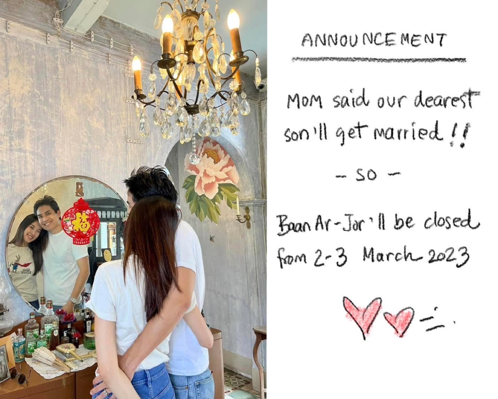

2023 · award · event
Toh Daeng closes for a brother's wedding, looking back on Baan Ar-Jor's journey

Original text in Thai
บ้านอาจ้อ ปิดร้าน 2-3 มีนา 2023 น้า ❤️
หลังจากเปิดบ้านอาจ้ออย่างไม่เป็นทางการ 30/8/2018 ตั้งแต่วันนั้นเป็นต้นมา ทำงานยาวๆ ยังไม่เคยปิดร้านจริงจังเลย มาวันนี้โก๊โอ๊กจะได้แต่งงาน ตั่วโก๊ดีใจสุดๆ 🥰❤️
ดีใจที่ได้กลับมาปรับปรุงบ้านอาจ้อนี้ มีเรื่องดี เรื่องอัศจรรย์เพียบๆ
เริ่มตั้งแต่อาก๊องหายจากมะเร็ง บ้านเป็นสถานที่ต้อนรับประชุมคณะกรรมการอนุภาษและบุตรนอกสถานที่ ต้อนรับคณะ UN มีดนตรีในสวน อาก๊องได้ร่วมวงกับคณะวงดนตรีฮาวาย แกรมมี่อวอร์ด 6 รางวัล เป็นสถานที่ต้อนรับงานสำคัญๆทั้งระดับจังหวัด ระดับประเทศอีกหลายๆงาน
เกิดร้านอาหารโต๊ะแดงมีอาหารหร่อยๆ จากของชุมชน ได้รับรางวัลสติ๊กเกอร์มิชลินใน 1 ปีที่เปิด
มีมูลนิธิบ้านอาจ้อเกิดขึ้น ช่วยเหลือนักเรียนครู ซ่อมแซมโรงเรียน คนบริจาคมีจิตศรัทธามากมายมหาศาล
ได้ประดิษฐานพระพิฆเนศปางสุขสมปรารถนา สร้างปาฏิหาริย์ และเป็นกำลังใจให้หลายๆคนทำงานได้ประสบความสำเร็จ
ล่าสุดก็จะได้เป็น สถานที่แต่งงานสุดโรแมนติกของโก๊โอ๊ก ในอีก 2-3 วันนี้ 🥰💕
#บ้านอาจ้อ 💕